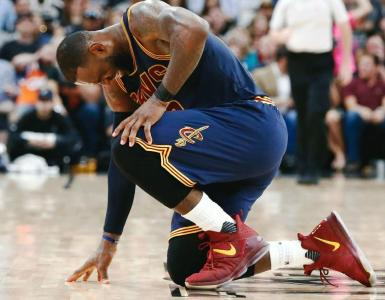
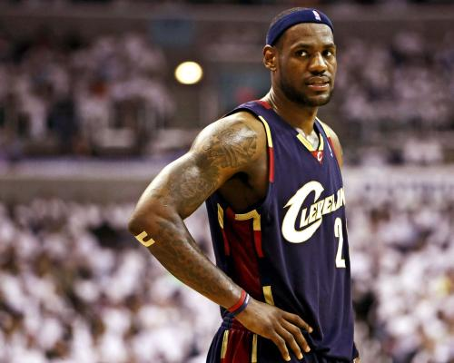

勒布朗·詹姆斯在2003年NBA选秀中于首轮第1顺位被克利夫兰骑士队选中。2003-2010年，詹姆斯效力于骑士队，期间2次当选NBA最有价值球员（MVP）。2010年，詹姆斯转会至迈阿密热火队，与德怀恩·韦德、克里斯·波什组成“三巨头”阵容。2012年，詹姆斯得到NBA个人生涯的第3座常规赛MVP，第1个总冠军和总决赛MVP。詹姆斯代表美国男篮获得了2012年伦敦奥运会金牌，追平了迈克尔·乔丹在1992年所创的纪录。2013年，詹姆斯获得第4个常规赛MVP、第2个NBA总冠军和第2个总决赛MVP，实现两连冠。2014年，詹姆斯回归骑士，与凯里·欧文、凯文·乐福组成“三巨头”阵容。2016年，詹姆斯带领骑士逆转战胜卫冕冠军勇士获得队史首个总冠军和个人第3个总决赛MVP。2018年7月，宣布加盟洛杉矶湖人队。 [1-2]
 